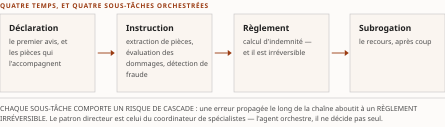
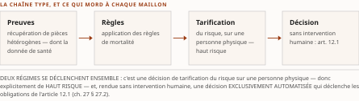

Chapitre 34Les sous-domaines financiers : banque, assurance, patrimoine
Livre III — Encadrer : orchestration en entreprise, cadre réglementaire canadien et terrain financier. Troisième mouvement — le terrain canadien : interopérabilité financière et adoption (ch. 31-36). Quatrième chapitre du mouvement : **il instancie, sous-domaine par sous-domaine, les six patrons que le ch. 31 a posés une fois**
La thèse a été collationnée contre le texte rédigé de sa source avant la rédaction (décision 14 du TOC). Domaine de balayage : une thèse examinée, zéro réalignée. Le ch. 5 du Vol. I n'a pas de thèse formelle ; celle du plan est une construction d'éditeur fidèle à l'organisation de ses §5.7 à §5.11.
§ 34.0Ouverture : instancier, jamais re-dériver
Le ch. 31 a posé six patrons une fois pour toute la somme : l'irréversibilité, le risque systémique, la double-qualification, le critère anti-emballement, le quatre-yeux et le patron anti-blanchiment. ⚠ Ce chapitre les instancie sous-domaine par sous-domaine, et il n'en re-dérive aucun.
Ce qui varie d'un sous-domaine à l'autre n'est pas la nature des durcisseurs, mais leur pondération et leur point d'application. En banque, c'est l'irréversibilité du règlement ; en assurance de dommage, c'est la cascade d'erreurs le long de la chaîne du sinistre ; en assurance de personne, c'est le coût humain d'une décision erronée ; en gestion de patrimoine, ce n'est pas un paiement mais une recommandation ; dans les services technologiques, c'est la dépendance elle-même.
Trois réserves de régime commandent la lecture. (1) Toute la matière entre en [C] — aucun énoncé n'est central. (2) ⚠ Le chapitre porte une quarantaine d'annonces produit datées, la plupart auto-déclarées : chacune est attribuée à sa source et marquée à re-vérifier, et aucune n'est recommandée (PRD Vol. II §8.4). (3) ⚠ Plusieurs affirmations sont déclarées par le Vol. I lui-même « hors corpus bibliographique du chapitre, à sourcer à la rédaction » : elles sont reprises avec cette réserve, et un lecteur qui les réutiliserait devrait les sourcer lui-même.
Ce que le chapitre ne traite pas. ⚠ L'architecture de référence, le modèle de maturité financier et la grille de décision — les §5.12.1 à §5.12.3 de la source — sont hors périmètre : ils vont au ch. 43, au Livre IV. L'interopérabilité B2B et les paiements agentiques — le §5.13 — vont au ch. 36. ⚠ Ces deux sorties sont déclarées à la table de couverture, et le chapitre ne les anticipe pas.
§ 34.1Bancaire : détail, gros, paiements, crédit, cœur de système
Le premier sous-domaine combine l'ensemble des durcisseurs : irréversibilité des rails de règlement, exigences de fonds propres, risque de modèle codifié et auditabilité réglementaire.
34.1.1 Le tri par régime d'usage
Le critère structurant de tout le sous-domaine est la distinction entre deux régimes d'usage que le discours commercial tend à confondre, et le ch. 31 § 31.1.3 la pose une fois pour tout le mouvement : la productivité assistée — un copilote rédige, résume, prépare, mais aucune transaction irréversible n'est exécutée sans intervention humaine — et l'autonomie transactionnelle — l'agent initie une action à effet financier irrévocable.
La quasi-totalité des déploiements observés en 2024-2026 relèvent du premier régime — observation de cabinet, attribuée à Deloitte (2025) ; l'autonomie transactionnelle demeure rare, bornée et réservée à des périmètres à faible matérialité.
Ce tri n'est pas une nuance rhétorique : il détermine le niveau de garde-fou exigé. Un copilote tombe sous une gouvernance de productivité ; un agent transactionnel déclenche trois patrons du ch. 31 — la libération humaine sur l'irréversible (§ 31.1.1), la double-qualification (§ 31.1.4) et la ségrégation des tâches (§ 31.3.4).
Le tri n'est pas davantage une échelle d'autonomie (R-13 du Vol. III) : les échelles de la somme sont nommées par leur cardinal et leur numérotation au ch. 14 § 14.4, et le mot « copilote » y désigne trois objets distincts.
Une projection d'analyste situe l'enjeu économique, et elle se cite avec son attributeur : une érosion potentielle des bassins de profit bancaires pouvant atteindre 170 G$ d'ici 2027 — projection d'analyste attribuée à McKinsey (2025) — explique la pression d'adoption. ⚠ Mais la pression économique ne dispense pas du tri par criticité, qui reste le préalable à toute conception.
34.1.2 Front conversationnel et le revirement humain-dans-la-boucle
Le front conversationnel illustre la domination du régime de productivité assistée et les limites de l'autonomie tournée vers le client.
Côté copilotes employés, JPMorgan Chase rapporte un déploiement à environ 200 000 utilisateurs en huit mois — chiffres auto-déclarés par l'établissement, à re-vérifier — avec des premiers agents multi-étapes en émergence. Côté client, Bank of America décrit un assistant ayant dépassé trois milliards d'interactions au sein de plus de 26 milliards d'interactions numériques annuelles — chiffres auto-déclarés par l'établissement ; ⚠ et cet assistant demeure réactif, non un agent transactionnel autonome.
Un cas fait charnière, et sa leçon est plus instructive que ses chiffres. L'assistant que Klarna a déployé en février 2024 fut promu comme accomplissant « le travail de 700 agents à temps plein » — chiffre auto-déclaré par Klarna, et contesté — avant un revirement, à partir de mai 2025, vers un modèle hybride réintroduisant l'humain.
Lecture de l'auteur la leçon transférable est la segmentation par criticité : un agent peut traiter le statut d'une commande, mais le litige, la fraude ou la situation de détresse financière exigent l'escalade humaine. ⚠ Ce revirement confirme deux choses : le patron de collaboration humain-agent du ch. 24 § 24.5.4, et le tri du § 34.1.1 — l'enthousiasme initial pour le remplacement intégral cède devant l'exigence de qualité et de conformité sur les interactions à fort enjeu, où une réponse erronée engage la responsabilité de l'établissement (ch. 31 § 31.1.3). Ce que le socle établit : les faits et le revirement. Ce qu'il n'établit pas : cette généralisation.
34.1.3 Crime financier : la tête de pont
Le patron du crime financier agentique est posé au ch. 31 § 31.4.3, siège unique : l'agent investigue et prépare, la décision de déclarer demeure humaine. Cette sous-section n'ajoute que les illustrations bancaires datées et le rattachement canadien.
La conformité au crime financier constitue la tête de pont de l'agentique en banque parce qu'elle conjugue un volume massif d'alertes, un produit narratif bien adapté à la génération de texte, et l'exclusion de la détection de fraude du régime de haut risque européen (ch. 30 § 30.2.3).
Les illustrations produit datées convergent vers le triage assisté plutôt que vers la décision autonome, et chacune porte son statut : un éditeur intègre un triage anti-blanchiment à son orchestrateur ; un autre annonce un agent de criminalité financière opérant en temps réel — annonce fournisseur ; un partenariat annoncé le 4 mai 2026 positionne un agent de crimes financiers comme premier cas d'usage, avec deux déploiements clients annoncés et une disponibilité générale annoncée pour le second semestre 2026, données confinées sur l'infrastructure de l'éditeur — annonce à re-vérifier. ⚠ Neutralité fournisseur : trois offres nommées, aucune recommandée.
Du côté canadien, le rattachement est celui du ch. 30 § 30.2.7 : le programme de conformité demeure non délégable à l'agent, et de nouvelles obligations encadrent la conservation et la documentation depuis le 1ᵉʳ octobre 2025. ⚠ Le Boston Consulting Group (2025) qualifie la vérification client de domaine où l'agentique passe le plus tôt à l'échelle ; tout gain d'efficacité chiffré relève de l'auto-déclaration et doit être attribué nominativement.
34.1.4 Crédit et octroi : périmètre de haut risque et origination hypothécaire
Le crédit aux personnes physiques est l'un des rares domaines bancaires explicitement visés par le régime européen de haut risque — notation de crédit et de solvabilité des personnes physiques, ⚠ à l'exception de la détection de fraude (ch. 30 § 30.2.3).
Le patron réglementaire central consiste à séparer nettement la décision réglementée de l'orchestration agentique qui l'entoure, et il est le plus clair du chapitre :
La notation de solvabilité demeure un modèle gouverné, explicable et journalisé, soumis au régime du risque de modèle. L'agent n'est pas ce modèle. Il orchestre autour : il collecte les pièces justificatives, pré-remplit les formulaires, explique la décision au client — ⚠ mais il ne se substitue pas au moteur de décision réglementé.
Le delta sectoriel empile deux régimes, et il faut les tenir séparés : le régime européen de haut risque — échéance reportée au 2 décembre 2027, report adopté sous réserve de publication (ch. 30 § 30.2.3) — et les régimes de notification de décision automatisée : le régime européen et l'article 12.1 québécois, dont le ch. 27 est le siège et qui n'est pas une interdiction mais un régime de transparence et de révision.
L'origination hypothécaire constitue un ajout volumétrique majeur, distinct du crédit à la consommation et lui aussi visé. ⚠ La chaîne — réception des documents, vérification, pré-remplissage selon un modèle de référence publié le 29 octobre 2025 (ch. 31 § 31.2.5), puis clôture électronique — se prête à l'orchestration agentique sur ses étapes à faible irréversibilité, tandis que la notation décisionnelle reste un modèle gouverné. ⚠ Le standard fournit le substrat sémantique qui réduit l'affabulation du pré-remplissage et facilite l'audit — application directe du ch. 31 § 31.2.1.
Une question de fond n'est pas refermée, et elle précède l'agentique : la littérature établit que certaines garanties d'équité sont mutuellement incompatibles. ⚠ La couche d'orchestration agentique n'absout pas le modèle sous-jacent : elle déplace seulement la frontière de l'explicabilité (ch. 31 § 31.3), qui doit relier la recommandation au profil et à sa justification.
34.1.5 Paiements temps réel, cœur de système et banque ouverte
Le versant des rails de paiement canadiens est au ch. 33, qui en porte les dates, les statuts et la réserve la plus stricte du Livre ; il n'est pas doublé ici. ⚠ Et le patron d'irréversibilité qui les gouverne est au ch. 31 § 31.1.1.
L'encapsulation du cœur de système est au ch. 24 § 24.1.4 pour son versant générique et au § 34.5.2 pour son delta financier ; elle n'est pas reprise ici.
La banque ouverte — l'agent comme destinataire accrédité — est au ch. 32, qui porte le cadre, son superviseur, son règlement prépublié et son fait négatif vérifié sur le standard technique. ⚠ Aucune spécification n'est nommée ici, et R-5 du Vol. II l'interdit : une anticipation d'industrie n'est pas une désignation.
§ 34.2Assurance de dommage
Le saut d'interopérabilité observé en assurance de dommage n'est pas l'agent lui-même, mais la mutation du transport sous-jacent.
34.2.1 Le tournant du transport : du lot au temps réel
Historiquement, l'échange entre courtiers, assureurs et fournisseurs s'appuyait sur un format par lots hérité de l'échange de documents structurés, puis sur des messages en temps réel. ⚠ Le critère discriminant est donc le passage de ce socle par lots à un transport agentique temps réel exposant les capacités sectorielles sous une forme consommable par un agent.
L'organisme sectoriel ACORD Solutions Group a annoncé le 28 mai 2026 une architecture qualifiée de « compatible avec le protocole agent-outil » au-dessus de deux de ses produits, présentée comme « gouvernée et auditable », avec une annonce de suivi début juin 2026 — disponibilité générale à re-vérifier, chiffre fournisseur : l'attributeur est nommé, la qualification reste la sienne.
Cette mise à disposition demande une qualification prudente, et c'est l'application directe du siège anti-emballement du ch. 31 § 31.2.6 : il ne s'agit ni d'un nouveau protocole, ni d'un serveur d'outils financier officiel ratifié — aucun standard sectoriel de ce type n'existe à juin 2026. Concrètement, l'organisation expose des produits existants par une interface ; la valeur réside dans le découplage entre la logique d'agent et le modèle de données assurantiel, et dans le caractère contractuel et journalisé de l'échange. ⚠ L'agent consomme une capacité bornée plutôt que de deviner une structure — ce qui réduit l'ambiguïté sémantique et facilite l'auditabilité.
34.2.2 Les plateformes de police comme plateformes d'agents
⚠ Cette sous-section est le siège de la grille d'architecture des plateformes d'assurance de dommage dans la somme ; les § 34.5.2 et § 34.5.6 y renvoient sans la re-dériver.
Le critère d'architecture oppose deux modèles. Dans le premier, l'agent est embarqué dans le cœur de police — couplage fort : la plateforme intègre ses propres capacités agentiques, au prix d'une portabilité de modèle réduite. Dans le second, le cœur est exposé comme outil par une interface ouverte et indépendante du modèle, laissant l'entreprise choisir et changer son fournisseur.
Les trois axes de décision sont : la portabilité du modèle, l'ouverture à l'orchestration inter-agents, et le périmètre de la piste d'audit.
Ce choix engage directement le découplage et l'évolution : un cœur exposé comme outil survit au remplacement du modèle ; un agent embarqué lie le cycle de vie du modèle à celui du cœur.
Les éditeurs se positionnent diversement, et chaque statut se dit : l'éditeur Guidewire a annoncé le 8 décembre 2025 une version dont un assistant de souscription présenté comme « première capacité agentique du cœur » et un cadre agentique indépendant du modèle — ⚠ à condition de distinguer l'outillage de développement du cadre agentique d'exécution embarqué, distinction que le ch. 31 § 31.2.6 impose ; un autre éditeur a lancé le 28 avril 2026 une plateforme articulant un référentiel de contexte, une couche d'assurance qualité et une passerelle ; un troisième — Majesco — a annoncé en octobre 2025 une version dotée de « 13 agents » avec humain dans la boucle — chiffre auto-déclaré par l'éditeur, à re-vérifier. ⚠ Neutralité fournisseur : trois offres nommées, aucune recommandée.
34.2.3 Sinistres et fraude : l'agent orchestrateur d'une chaîne
La chaîne du sinistre — déclaration, instruction, règlement, subrogation — est le théâtre où l'agentique est la plus visible, ⚠ et le patron directeur y est celui du coordinateur de spécialistes, non du décideur unique.
L'agent orchestre des sous-tâches — extraction de pièces, évaluation des dommages, détection de fraude, calcul d'indemnité — dont chacune comporte un risque de cascade : une erreur propagée le long de la chaîne aboutit à un règlement irréversible. ⚠ Ce mode d'échec relève de la taxonomie des défaillances multi-agents dont le ch. 6 est le siège, et il impose la libération humaine sur l'action irréversible (ch. 31 § 31.1.1).
Une distinction de lecture est nécessaire, et elle vaut pour tout le chapitre : il faut séparer les agents-produits — vendus comme agents autonomes — des produits qui utilisent des agents en sous-composant, ⚠ pour ne pas surclasser le degré réel d'autonomie.
L'éditeur Shift Technology a lancé le 16 septembre 2025 une plateforme de sinistres qualifiée d'agentique, et revendique des contrats reconduits ainsi que des gains — −3 % de pertes, −30 % de temps de traitement, 60 % d'automatisation, plus de 99 % de couverture : ⚠ chiffres AUTO-DÉCLARÉS par Shift Technology, à re-vérifier, cités ici sous cette seule attribution. ⚠ Le marché se concentre : l'acquisition d'EvolutionIQ par CCC Intelligent Solutions, clôturée le 6 janvier 2025 pour 730 M$, cible une branche particulière ; l'éditeur Tractable industrialise l'évaluation de dommages « sans contact ». ⚠ Un règlement de litige entre Tractable et CCC Intelligent Solutions constitue un signal de concentration et de risque de verrouillage fournisseur — à surveiller du point de vue de la résilience opérationnelle (ch. 30 § 30.2.2).

34.2.4 Souscription, tarification, distribution et télématique
En amont du sinistre, la souscription suit un patron d'enchaînement : réception → enrichissement → triage → soumission prête à décider. ⚠ L'agent collecte la demande, l'enrichit de données externes, la trie par appétit de risque et la présente au souscripteur sous une forme prête à décider — application du patron du ch. 31 § 31.1.1.
La télématique et l'assurance fondée sur l'usage fournissent le substrat de données, et les chiffres portent leur attributeur : l'exploitant Cambridge Mobile Telematics revendique une levée de 350 M$ en mars 2026, plus de 21 millions d'assurés aux États-Unis et une croissance annuelle de l'ordre de +28 % — chiffres de l'exploitant et de la presse, à re-vérifier.
Les métriques de productivité souvent citées sont des projections d'analyste : souscription ramenée de trois jours à trois minutes, taux de traitement de bout en bout passant de 10-15 % à 70-90 % — ⚠ projections d'analyste attribuées à McKinsey & Company (2025), à re-vérifier, jamais des mesures auditées.
La tarification fondée sur l'usage soulève des questions d'équité tarifaire, traitées par une littérature dédiée ; ⚠ en assurance de dommage, cet enjeu relève du risque de modèle et de la conformité locale, non du régime de haut risque — voir § 34.2.6.
34.2.5 Réassurance : la frontière où l'agentique reste copilote
La réassurance marque la frontière où l'agentique cesse d'être autonome pour rester copilote.
Le critère est que franchir la frontière inter-firmes — cédante, courtier, réassureur — exige une identité d'agent vérifiable et une contractualisation explicite : un agent qui agirait au nom d'une partie auprès d'une autre devrait être identifié, autorisé et imputable. ⚠ C'est exactement l'objet du ch. 18 § 18.1, siège unique de la connaissance de l'agent, qui n'est pas reconstruit ici.
Or ces mécanismes — connaissance de l'agent, négociation de contrat machine-à-machine, journalisation opposable entre entreprises — sont encore absents en pratique à juin 2026 — absence de documentation dans le corpus de la source, degré 3, et non un fait négatif vérifié. Les déploiements observés sont par conséquent des copilotes internes à une firme, et non des agents franchissant la frontière de manière autonome.
Un courtier a présenté le 23 juin 2025 un copilote et un module contractuel couvrant quinze branches ; un réassureur a publié en décembre 2025 un plan directeur — ⚠ communiqués fournisseurs hors corpus bibliographique du chapitre source, à sourcer et à re-vérifier au moment de citer. ⚠ Il importe de ne pas surclasser ces réalisations : ce sont des copilotes et des cadres conceptuels, non des agents autonomes. La ségrégation des rôles et l'indépendance d'exécution du ch. 31 § 31.3.4 restent des conditions structurelles.
34.2.6 Le régime propre : où le droit mord différemment
Le régime applicable à l'assurance de dommage se distingue par ce qui n'y mord pas.
Le point critique est que la tarification et la souscription n'y sont pas explicitement classées « haut risque » : le point de l'annexe européenne qui vise l'assurance ne concerne que la vie et la santé (ch. 30 § 30.2.3). ⚠ L'assurance de dommage se trouve dans une zone grise, et il serait erroné d'y étendre le régime de haut risque.
Le centre de gravité réglementaire se déplace donc vers deux pôles. D'une part, le risque de modèle : la guidance américaine du 17 avril 2026, ⚠ qui exclut explicitement l'IA générative et agentique et reste non contraignante ; E-23, ⚠ finale mais en vigueur le 1ᵉʳ mai 2027, et dont la portée élargie couvre les assureurs de dommage ; et la ligne directrice québécoise, même date d'entrée en vigueur (ch. 25, ch. 27, ch. 30 § 30.2.4). D'autre part, la résilience opérationnelle, avec son registre de tiers et son risque de concentration (ch. 30 § 30.2.2).
La National Association of Insurance Commissioners (NAIC) poursuit des travaux sur les écarts de redevabilité et les erreurs en cascade, sur la base de son bulletin type de 2023. ⚠ Une projection d'analyste situe à environ 7-8 % la proportion d'assureurs disposant d'une gouvernance inter-agents intégrée — projection dont la source ne nomme pas l'attributeur, à marquer comme telle.
§ 34.3Assurance de personne
L'assurance de personne se distingue de l'assurance de dommage par deux durcisseurs cumulés et structurants : la souscription et la tarification y portent sur une personne physique et tombent donc explicitement dans le périmètre de haut risque ; et la donnée mobilisée est une donnée de santé sensible. ⚠ Le delta réglementaire n'est donc pas marginal mais constitutif.
Le patron du ch. 31 § 31.1.1 s'y applique avec une acuité particulière : le coût d'une décision erronée peut y être humain, et non seulement financier.
34.3.1 La souscription accélérée comme chaîne d'orchestration régulée
La souscription vie accélérée est le cas où la chaîne d'orchestration rencontre la contrainte réglementaire la plus directe : c'est une décision de tarification du risque sur une personne physique, donc explicitement de haut risque ; et, lorsqu'elle est rendue sans intervention humaine, une décision exclusivement automatisée déclenchant les obligations de l'article 12.1 (ch. 27 § 27.2).
La chaîne type enchaîne : récupération de preuves hétérogènes, application de règles de mortalité et de morbidité, puis verdict — traitement de bout en bout pour les profils nets, renvoi à un humain sinon.
Le critère architectural directeur n'est pas « quel modèle de langage », mais où s'arrête l'autonomie : tout cas non traité de bout en bout remonte à un souscripteur humain, et toute décision exclusivement automatisée doit rester explicable et révisable.
Le rôle propre de l'agent y demeure circonscrit — synthèse de preuves volumineuses et suggestion de prochaine action — tandis que le verdict de mortalité reste un modèle actuariel ou à règles, gouverné au sens du risque de modèle.
Il faut distinguer deux objets que le marketing confond : le moteur de règles déterministe, auditable par construction et antérieur aux modèles de langage ; et l'agent non déterministe qui orchestre la collecte et la synthèse autour de ce moteur. ⚠ Le second n'absorbe pas le premier : il l'instrumente.
Deux plateformes ont annoncé, en novembre 2025 et le 29 octobre 2025, des socles présentés comme des bonds d'intelligence artificielle pour ce sous-domaine — auto-déclaré, statuts annonce / préversion / disponibilité générale à reconfirmer. ⚠ Le cabinet McKinsey relève que la modernisation des technologies de cœur par l'agentique reste, à juin 2026, largement en projet plutôt qu'en production — estimation d'analyste.

34.3.2 La donnée de santé comme contexte d'agent
Là où la branche vie pose la question « où s'arrête l'autonomie », la donnée manipulée fait apparaître une seconde frontière.
Le patron d'ancrage gouverné du ch. 24 § 24.4 s'y spécialise en un pont dossier de santé → agent, mais sous une contrainte de premier ordre absente des autres sous-domaines : la donnée de santé y est une catégorie particulière dans les trois ordres juridiques que la source recense — européen, américain et québécois.
La conséquence d'architecture est que la minimisation et le consentement doivent précéder la lecture : l'agent ne doit recevoir en contexte que le strict nécessaire à la tâche, et la résidence de ce contexte tombe sous le piège du ch. 31 § 31.5.1 — l'invite, les plongements et les traces contiennent la donnée client, ici une donnée de santé.
Sur le plan de l'interopérabilité, il n'existe aucun serveur d'outils sectoriel officiel pour l'assurance de personne à juin 2026 — application directe du siège anti-emballement du ch. 31 § 31.2.6. Ce qu'on observe est un empilement : une couche sémantique de ressources de santé matures, au-dessus de laquelle s'intercalent des connecteurs génériques, non sectoriels. ⚠ Le rôle de cette couche est de présenter à l'agent une capacité bornée, identifiée et journalisée plutôt qu'un accès direct au dossier.
Note de sourçage, reprise de la source : les standards d'interopérabilité de santé et les connecteurs correspondants ne figurent pas au corpus bibliographique du chapitre source, centré sur la finance ; ils sont à sourcer sur leurs publications propres au moment de citer, et toute affirmation à leur sujet demeure sans appui bibliographique.
34.3.3 Prestations et autorisation préalable
Le versant prestations renverse le calcul de risque qui gouverne le reste du chapitre : ici, le coût d'erreur n'est pas financier mais humain — un refus de soins, l'interruption d'une rente d'invalidité.
Le patron du ch. 31 § 31.1.1 s'y traduit en une asymétrie d'autorité explicite :
Un agent peut être autorisé à approuver ou à accélérer une prestation — cas où l'erreur joue en faveur de l'assuré et reste réversible côté payeur — ⚠ mais une décision défavorable de nature clinique doit rester réservée à un professionnel qualifié, assortie du journal d'audit infalsifiable du ch. 31 § 31.3.2.
Le cas d'usage le plus mature et, simultanément, le plus litigieux est l'autorisation préalable : techniquement, l'agent assemble le dossier — il rassemble pièces et justifications cliniques — ⚠ mais la décision adverse demeure humaine.
La cascade d'erreurs propre aux systèmes multi-agents y prend une portée particulière : une chaîne mal cadrée peut convertir une synthèse erronée en refus à conséquence sanitaire.
Le contre-exemple canonique de gouvernance illustre précisément ce que le patron interdit, et il se cite avec toutes ses réserves : un litige visant l'usage d'un outil prédictif en gestion de l'utilisation — refus partiel d'une requête en rejet le 13 février 2025 — est à présenter comme un contre-exemple contesté par l'assureur, et non comme un fait établi ; ⚠ son intérêt analytique est de matérialiser le risque qu'un score automatisé se substitue de fait à la décision clinique humaine. ⚠ Note de sourçage : les canaux d'échange en santé, les acteurs en cause et le litige ne figurent pas au corpus bibliographique du chapitre source — ils relèvent de sources juridiques et de santé à citer directement, et tout chiffre de rendement d'un fournisseur est auto-déclaré.
34.3.4 Distribution, conseil et rentes
La distribution et le conseil forment le pont vers la gestion de patrimoine du § 34.4 : l'agent y assiste le distributeur, ⚠ mais la convenance de la recommandation reste un acte réglementé qui ne s'atténue pas du fait qu'un agent l'a préparé (ch. 30 § 30.2.5).
L'exigence d'interopérabilité qui en découle est que la chaîne doit porter la preuve reliant la recommandation au profil du client et à sa justification — un agent qui « propose » sans laisser ce fil documentaire reporte le risque de conduite sur le distributeur.
Le sous-domaine présente un trait qui le distingue du patrimoine : les rentes et la couverture de longévité engagent l'assureur sur un horizon pluridécennal — souvent trente à quarante ans — de sorte que la stabilité et l'explicabilité du modèle actuariel priment sur l'agilité de l'agent. ⚠ Les hypothèses de mortalité, de taux et de comportement tombent sous le risque de modèle gouverné : leur révision n'est pas un terrain d'expérimentation non déterministe, et l'agent y intervient au mieux comme assistant de préparation, jamais comme arbitre des hypothèses de long terme.
Deux plateformes ont annoncé trois copilotes de distribution et d'administration — en octobre 2025, en février 2026 et en juin 2025 — annonces fournisseur, statuts et chiffres auto-déclarés, à reconfirmer.
34.3.5 Le régime propre : haut risque, équité, donnée sensible
Cette sous-section n'instaure pas un nouveau régime : elle énonce le delta que la vie et la santé ajoutent au bloc transverse du ch. 30, et qui justifie d'en faire une branche distincte du § 34.2.6, où la tarification de dommage n'est précisément pas explicitement de haut risque.
Le premier marqueur est le régime européen : le point de l'annexe qui vise l'assurance range au haut risque l'évaluation du risque et la tarification en assurance vie et santé pour les personnes physiques — ⚠ libellé exact, à ne pas étendre à l'assurance de dommage ni à confondre avec le point qui vise la notation de crédit. L'échéance était fixée au 2 août 2026 ; ⚠ le report de seize mois au 2 décembre 2027 a été adopté dans la fenêtre du socle, sous la seule réserve de la publication à suivre (ch. 30 § 30.2.3).
S'y articule, sans nouvelles exigences propres, l'avis de l'Autorité européenne des assurances et des pensions professionnelles (EIOPA) sur la gouvernance et la gestion du risque lié à l'IA, du 6 août 2025. Aux États-Unis, le pilotage passe par le bulletin type de la National Association of Insurance Commissioners (NAIC), adopté le 4 décembre 2023, repris par un nombre croissant d'États — ⚠ décompte et statut à reconfirmer.
Au Canada et au Québec : E-23 couvre désormais tous les assujettis fédéraux, assureurs vie compris ; la ligne directrice québécoise ajoute un responsable senior unique, un répertoire centralisé et une explication « claire et simple » au client — ⚠ ce que le ch. 30 § 30.2.7 porte en [C], et que le ch. 27 § 27.1 déclare comme lacune du socle du Vol. II, non comblée ; et l'article 12.1 s'applique à toute décision exclusivement automatisée, ⚠ sans être une interdiction.
L'enjeu de fond, plus aigu ici qu'ailleurs, est l'équité et le biais : sur des contrats de très longue durée, le risque est qu'un modèle exploite des variables corrélées à l'état de santé, au profil génétique ou à l'âge, et reproduise une discrimination prohibée. ⚠ La littérature fournit le cadre formel — bornes théoriques entre critères d'équité, application au prix d'assurance non discriminatoire — ⚠ et aucun de ces cadres ne se résout par l'agentique : l'agent doit au contraire en porter la preuve documentée.
Le delta se résume ainsi : un même agent y cumule haut risque, donnée sensible et horizon long, ce qui rend la gouvernance d'équité non pas optionnelle mais constitutive de la conformité.
§ 34.4Gestion de patrimoine et d'actifs
Ce sous-domaine se distingue des trois précédents par une tension de qualification juridique plutôt que par l'irréversibilité d'un règlement : le geste réglementé n'est pas un paiement mais une recommandation, et la frontière critique est celle qui sépare l'assistance documentaire du conseil personnalisé soumis aux obligations de convenance.
Le critère de lecture transversal se pose une fois : ne jamais confondre le conseiller automatisé classique — moteur de règles déterministe — avec l'agent non déterministe (§ 34.4.4).
34.4.1 Le copilote du conseiller comme orchestrateur d'interopérabilité
Le premier patron n'est pas un agent qui place ou rééquilibre, mais un copilote dont la valeur d'interopérabilité tient à ce qu'il écrit dans le système d'enregistrement réglementaire.
La distinction est structurante : un assistant qui se contente de répondre reste un outil de productivité sans empreinte sur la piste documentaire ; un copilote qui transcrit l'entretien, en produit une note, la consigne au dossier et en dérive les tâches de suivi referme une boucle où chaque écriture devient un acte traçable et révisable.
La trajectoire documentée de Morgan Stanley en donne l'exemple : à un assistant déployé en 2023 — adoption dépassant 98 % des équipes, auto-déclarée par la firme dans une étude de cas de son fournisseur de modèle (2024) — succède en juin 2024 un outil combinant transcription et synthèse avec consignation automatique au registre, puis un troisième côté recherche en octobre 2024. ⚠ Le déplacement décisif est là : l'agent ne lit plus seulement le contexte, il alimente le registre — ce qui fait de la qualité et de la réversibilité de cette écriture une exigence de premier ordre.
Deux corollaires en découlent. D'abord, ⚠ le consentement du client à l'enregistrement devient une pré-condition d'interopérabilité, pas une formalité : sans lui, la boucle ne peut s'amorcer. Ensuite, ⚠ l'écriture au dossier tombe sous les obligations de conservation des livres et registres — ch. 31 § 31.3.2 — de sorte que la note produite par l'agent doit être conservée, horodatée et opposable au même titre qu'une note rédigée par le conseiller.
Le mouvement n'est pas isolé : un autre fournisseur a intégré son assistant au flux de travail du conseiller en mars 2026, en remplacement d'un agent conversationnel de 2023. ⚠ Le terrain d'adoption mature n'est donc pas le conseil automatisé, mais l'instrumentation gouvernée de l'acte de conseil humain.
34.4.2 L'architecture fédérée à registre de capacités
Le patron d'architecture le plus instructif du sous-domaine est un registre fédéré de capacités qui transpose au monde de l'investissement la résolution du problème N×M en N+M posée au ch. 24 § 24.0.3 : chaque équipe expose ses fonctions comme capacités enregistrées plutôt que de multiplier les intégrations point-à-point.
La conception documentée réunit une orchestration supervisée, un registre alimenté par des dizaines d'équipes, un filtrage ramenant l'espace d'outils à une vingtaine ou une trentaine d'outils pertinents par requête, et des garde-fous d'entrée et de sortie.
Le trait le plus signifiant n'est pas technique mais réglementaire : la contrainte « pas de conseil en investissement », vérifiée par évaluation, est un choix d'architecture de gouvernance — en interdisant à l'agent de formuler un conseil personnalisé, l'éditeur maintient délibérément le copilote en deçà du seuil qui déclencherait les obligations de convenance (§ 34.4.5).
C'est l'illustration directe du patron du ch. 31 § 31.1.1 appliqué non à l'irréversibilité d'un règlement mais à la frontière du conseil réglementé : on borne la capacité de l'agent pour rester du bon côté de la qualification juridique. ⚠ Le parc supervisé par la plateforme de BlackRock est de l'ordre de plusieurs milliers de milliards de dollars d'actifs — chiffre auto-déclaré par l'éditeur, à re-vérifier — ce qui donne la mesure de l'enjeu de fiabilité.
Le même patron se décline sur l'investissement alternatif et sur la production de commentaires de portefeuille — un outil annoncé le 2 octobre 2025 — étant entendu qu'il s'arrête avant la communication finalisée au client, laissant le conseiller valider le texte : ⚠ ce qui reconduit l'asymétrie préparation par l'agent / décision et diffusion par l'humain.
Lecture de l'auteur l'apport opérationnel du registre est de convertir la prolifération d'intégrations en un point de catalogage unique où chaque capacité porte une identité, une portée et une évaluation. ⚠ Le filtrage à vingt ou trente outils par requête n'est pas un détail de performance : c'est un contrôle de surface d'attaque et un contrôle de coût. Ce que le socle établit : la conception. Ce qu'il n'établit pas : cette lecture des trois invariants — registre gouverné, garde-fous évalués en continu, contrainte de finalité testée par évaluation plutôt que par simple consigne d'invite.
34.4.3 Plateformes de gestion : de la requête en langage naturel à l'agent de données
Le critère éditorial structurant est de distinguer l'analyse en langage naturel — généralement disponible — de l'agent autonome de flux de travail, encore en préversion. La confusion marketing assimile les deux ; l'architecture les sépare nettement.
Une plateforme en fournit l'illustration : une couche d'analyse de portefeuille en langage naturel, déployée début mars 2026, est un outil de requête et de synthèse sur des données déjà rapprochées, tandis qu'un agent d'opérations de données relève du registre de la préversion.
Le patron à retenir est que les premiers agents véritablement disponibles ne sont pas des agents de conseil mais des agents de qualité, de connectivité et de réconciliation de données : on commence par les flux internes à faible irréversibilité — préparer, rapprocher, contrôler la donnée — là où une erreur se corrige sans conséquence client immédiate, avant d'envisager toute action tournée vers le client.
Cette gradation est l'application directe du principe « commencer par les usages à faible irréversibilité » (ch. 31 § 31.1.1) : la donnée propre et rapprochée est le pré-requis de tout le reste, et un terrain d'apprentissage sûr.
Le même mouvement s'observe chez trois autres acteurs, avec des annonces de juin 2025, mars 2026 et février 2026. ⚠ Toutes ces annonces sont fournisseur et à statut — annonce, préversion, disponibilité générale — à reconfirmer ; ⚠ la discipline de lecture est de ne jamais traiter une préversion d'agent de flux comme une capacité de conseil disponible.
34.4.4 Conseiller automatisé classique et agent : la désambiguïsation impérative
La désambiguïsation la plus importante du sous-domaine est aussi la plus mal comprise du marché : le conseiller automatisé classique n'est pas un agent fondé sur un modèle de langage.
Les plateformes de conseil automatisé établies reposent sur des moteurs de règles déterministes : allocation dérivée d'une théorie du portefeuille, rééquilibrage déclenché par franchissement de seuils, récolte algorithmique de pertes fiscales. ⚠ Les méthodologies publiées décrivent des systèmes auditables par construction : à entrée donnée, sortie reproductible, sans génération non déterministe.
L'IA agentique y est, à juin 2026, périphérique — service à la clientèle, accueil, assistance documentaire — et non au cœur de la décision d'investissement.
Confondre les deux conduirait à attribuer à un moteur de règles auditable les risques de non-déterminisme et d'affabulation propres aux modèles de langage, et inversement à présenter un agent comme aussi prévisible qu'un moteur de règles. ⚠ Un mécanisme se qualifie par ce que sa spécification démontre (R-02 du Vol. III) : un moteur de règles démontre la reproductibilité ; un agent n'offre qu'une garantie probabiliste.
Le repère canadien est utile : Wealthsimple, premier conseiller automatisé du pays, lancé en 2014, gère un encours de l'ordre de cent milliards de dollars canadiens — chiffre auto-déclaré par la firme, à re-vérifier — et opère comme gestionnaire de portefeuille inscrit auprès des autorités de valeurs mobilières et de l'autorité québécoise : ⚠ un statut réglementé qui ne s'efface pas du fait de l'automatisation (ch. 28).
Une mise en garde de conformité s'impose au passage : l'automatisation d'une fonction n'exonère pas des obligations de communication, comme l'a rappelé la sanction prononcée par la Securities and Exchange Commission (SEC) le 18 avril 2023, assortie d'une pénalité de 9 M$, pour des déclarations inexactes sur un service de récolte de pertes fiscales.
Le patron transférable est l'autonomie bornée — et ⚠ ce n'est pas une échelle d'autonomie (R-13 du Vol. III), dont le lieu de croisement est le ch. 14 § 14.4 : l'agent assiste à la production de signaux, à la préparation et au post-marché, ⚠ mais n'initie pas l'acte irréversible, lequel reste soit déterministe, soit validé par un humain. ⚠ À juin 2026, l'usage agentique en gestion de patrimoine demeure largement expérimental.
34.4.5 Cadre fiduciaire, convenance et explicabilité
L'angle propre au sous-domaine — que le ch. 30 § 30.1 ne traite qu'en générique — est le cadre de meilleur intérêt et de convenance.
La règle directrice est sans atténuation :
Tout agent qui touche à une recommandation hérite des obligations d'agir au mieux des intérêts du client, et le fait qu'un agent ait préparé la recommandation ne dilue en rien la responsabilité de la firme.
La conséquence d'interopérabilité est précise : la chaîne doit porter la preuve reliant la recommandation au profil de connaissance du client et à sa justification, de façon traçable, conservée et révisable — ⚠ un agent qui « propose » sans laisser ce fil documentaire ne fait que reporter le risque de conduite sur la firme et le conseiller. C'est exactement l'objet du journal infalsifiable du ch. 31 § 31.3.2, ici appliqué à l'acte de conseil.
Une note de qualification est essentielle : la convenance n'est pas une matière du régime européen de haut risque — elle relève de l'encadrement de conduite, dont le ch. 30 § 30.2.5 porte le rappel : la firme demeure responsable du résultat de convenance, quel que soit le degré d'automatisation.
Le maillage juridictionnel se lit alors ainsi : aux États-Unis, la conduite relève d'un régime de meilleur intérêt, avec le rappel explicite des obligations applicables à l'IA générative publié par la Financial Industry Regulatory Authority (FINRA) le 27 juin 2024 ; au Canada et au Québec, la règle de convenance se combine à l'encadrement des organismes d'autoréglementation, à la ligne directrice québécoise (ch. 27) et à l'article 12.1 ; dans l'Union, la directive sur les services d'investissement cadre les produits concernés.
L'explicabilité y est doublement requise : par la conduite — justifier la recommandation au client — et par le droit des décisions automatisées. ⚠ La littérature fournit le répertoire des méthodes mobilisables, tout en rappelant que l'explicabilité d'un modèle non déterministe reste un problème de recherche ouvert — ce que le ch. 25 § 25.8 a établi du côté prudentiel canadien : la causalité entrées-sorties est souvent indéterminable.
34.4.6 Négociation et recherche augmentée
Le terrain où le patron multi-agents spécialisés est le plus abouti dans la littérature est aussi le plus prudent dans la pratique.
L'architecture canonique décompose la chaîne d'investissement en rôles dédiés — analyste fondamental, agent de sentiment, agent de risque, agent de construction de portefeuille, agent d'exécution, agent d'audit — coordonnés par les protocoles du ch. 8.
Le critère architectural directeur est que la ségrégation entre génération de signal, contrôle du risque et exécution n'est pas une commodité d'ingénierie mais le contrôle interne réincarné en architecture : un agent qui propose une position ne doit pas être celui qui en valide le risque ni celui qui l'exécute, sous peine de reconstituer un canal de collusion — ⚠ application directe du siège du quatre-yeux, ch. 31 § 31.3.4.
L'état réel reste néanmoins celui de la recherche et des pilotes, non de la production autonome : la littérature documente des cadres multi-agents et des bancs d'essai de décision, ⚠ mais « l'autonomie bornée » demeure la règle d'exploitation.
Sur le plan de l'interopérabilité, les agents d'exécution parlent les standards de marché établis — ceux du ch. 31 § 31.2 — que des serveurs d'outils encapsulent pour offrir à l'agent une capacité bornée et journalisée plutôt qu'un accès brut. ⚠ Une illustration datée d'octobre 2025 en donne un exemple — annonce fournisseur, à re-vérifier ; ⚠ et le critère du ch. 31 § 31.2.6 s'applique : ce n'est pas un standard sectoriel ratifié.
Ce sous-domaine porte enfin un risque systémique propre — uniformité des comportements et événements éclair lorsque de nombreux agents corrélés réagissent au même signal — ⚠ dont le siège est le ch. 31 § 31.1.2 ; il n'est pas re-développé ici.
34.4.7 Opérations institutionnelles
Le patron est contre-intuitif au regard de l'emballement : les premiers agents institutionnels réellement robustes ne sont pas des agents d'investissement mais des agents d'opérations de post-marché — réconciliation de positions et de transactions, traitement des opérations sur titres, calcul et contrôle de la valeur liquidative, production du reporting réglementaire.
Ces tâches ont la propriété qui en fait le bon point d'entrée : une irréversibilité immédiate faible — un rapprochement erroné se corrige avant tout effet externe — couplée à une exigence d'exactitude très élevée, le résultat alimentant la comptabilité du fonds et la déclaration au régulateur.
Le critère d'interopérabilité directeur est d'ancrer l'agent sur un standard exécutable plutôt que sur du texte libre : en s'appuyant sur le modèle de domaine commun et sur la transformation des règles de déclaration en code (ch. 31 § 31.2.4), l'agent orchestre ce standard, versionné, au lieu de deviner une logique de déclaration — ⚠ ce qui réduit l'espace d'affabulation et rend la sortie auditable.
Le garde-fou non négociable est le quatre-yeux sur tout ajustement comptable (ch. 31 § 31.3.4) : un agent peut préparer un rapprochement ou signaler un écart, mais l'ajustement qui modifie un solde reste soumis à une validation indépendante.
La discipline de lecture est de distinguer le copilote d'opérations — émergent — de l'agent autonome — rare : à juin 2026, l'état de l'art est l'assistance à l'opérateur, non l'exécution autonome de la chaîne comptable.
§ 34.5Services technologiques dans le domaine financier
Les quatre sous-domaines précédents partagent une dépendance qu'aucun ne porte seul : l'ossature technologique qui rend leurs agents conformes. Cette section la traite comme un sous-domaine à part entière, parce qu'en finance régulée la couche technologique n'est pas un simple substrat de productivité mais un lieu où s'exercent des obligations nominatives.
La spécificité financière tient en une bascule de finalité : la passerelle d'IA cesse d'être d'abord un optimiseur de coût d'inférence pour devenir un point de contrôle réglementaire, et la modernisation du cœur applicatif n'est légitime que si elle préserve l'identité, les permissions et la piste d'audit.
34.5.1 La résilience opérationnelle comme contrainte d'architecture
La résilience opérationnelle, traitée au niveau du régime au ch. 30 § 30.2.2, se traduit ici en contrainte directrice : ⚠ toute dépendance technologique critique — fournisseur de modèle, serveur d'outils hébergé, passerelle — doit être cartographiée, sa concentration évaluée avant toute contractualisation, et sa stratégie de sortie testée plutôt que postulée.
La prolifération d'agents du ch. 24 § 24.0.2 se relit en finance comme une prolifération de dépendances soumises à registre obligatoire : chaque agent matériel ajoute des fournisseurs en cascade — modèle d'inférence, hébergeur, intermédiaire de données — qui doivent figurer au registre. ⚠ Côté canadien, la lecture conjointe de trois lignes directrices en forme le pendant (ch. 30 § 30.2.7) — ⚠ l'une d'elles est déclarée par la source hors corpus bibliographique, à sourcer à la rédaction.
Le risque de concentration n'est pas hypothétique : un agent déployé sur une infrastructure d'un grand opérateur hérite mécaniquement d'une dépendance vers un fournisseur critique désigné, dont la première liste de dix-neuf entités a été arrêtée le 18 novembre 2025 (ch. 30 § 30.2.2).
La même exigence — éprouver plutôt que postuler — se prolonge vers la résilience d'exécution du parc : la continuité ne se démontre pas seulement par un test de bascule de fournisseur, mais par une exploitation capable de détecter, corréler et remédier en continu. ⚠ Le siège de cette discipline est au Livre IV ; ce chapitre n'en retient que le constat : en finance régulée, la résilience mesurée devient un indicateur de conformité autant que d'exploitation.
34.5.2 Modernisation du cœur : la façade gouvernée
Le patron de modernisation est l'encapsulation, non la réécriture de masse — spécialisation financière du principe posé au ch. 24 § 24.1.4. ⚠ L'opposition qui commande ce choix — agent embarqué dans le cœur contre cœur exposé comme outil, et ses trois axes de décision — a son siège au § 34.2.2 ; elle est appliquée ici au cœur bancaire, jamais re-dérivée.
Deux régimes doivent être distingués. D'une part, des agents employés pour moderniser : assistants de modernisation attaquant une pression parfois chiffrée à 70-75 % du budget technologique consacré au patrimoine applicatif — ⚠ chiffre de presse et d'analystes dont la source ne nomme pas l'attributeur, à re-vérifier. D'autre part, des agents en production opérant à travers une façade : trois éditeurs ont annoncé, en 2025 et 2026, des capacités d'exposition de leur cœur — ⚠ annonces fournisseur, statuts à reconfirmer, et neutralité fournisseur tenue.
Le critère de légitimité de la façade est strict : elle n'est admissible qu'assortie d'une identité d'agent, de permissions héritées du consentement et d'un journal d'audit — ce que le ch. 24 § 24.3 pose au grain du parc et le ch. 18 au grain de l'imputabilité.
Lecture de l'auteur l'invariant de la couche d'exposition est qu'il n'y a jamais d'accès direct en écriture au grand livre : seulement des capacités bornées, idempotentes, respectant la double entrée et la ségrégation des tâches comme propriétés vérifiables du contrat. ⚠ La sémantique d'effet que le mot « idempotente » appelle est au ch. 48, siège unique. Ce que le socle établit : les annonces et le patron d'encapsulation. Ce qu'il n'établit pas : cet invariant, qui est une lecture reprise du Vol. I.
34.5.3 Passerelle d'IA et plateformes d'intégration régulées
La passerelle cesse, en finance, d'être un optimiseur de coût pour devenir le point de contrôle obligatoire : application de politique, identité, prévention de fuite de données et contrôle de sortie, journalisation.
C'est une spécialisation du plan de contrôle d'entreprise du ch. 24 § 24.1.3 — ⚠ et le « plan de contrôle » désigne ici celui du maillage de services pré-agentique (ch. 1 § 1.3.4), non le terme que R-13 du Vol. III proscrit nu — mais dont le facteur déterminant n'est pas la commodité opérationnelle : ce sont les régimes de risque de modèle (ch. 30 § 30.2.4) et la résidence des données (ch. 31 § 31.5.1) qui imposent que les évaluations « ne quittent pas l'environnement ».
Les capacités attendues sont désormais standardisées chez les fournisseurs d'infrastructure — clés virtuelles et budgets de jetons, limites par requête, gouvernance multi-fournisseur, assainissement des données personnelles, passerelle-registre, orchestration et registre d'agents. ⚠ Six offres sont nommées par la source ; aucune n'est recommandée (PRD Vol. II §8.4).
La transposition financière la plus aboutie est l'archétype du « système d'exploitation d'agents » bancaire : un lancement rapporté au 14 mai 2026, avec disponibilité générale annoncée pour août 2026 — ⚠ rapporté par l'analyse tierce de Klover.ai (2025-2026), à recouper avec les communiqués primaires de l'éditeur.
Lecture de l'auteur la passerelle devient le lieu où s'instancient des contrôles autrement dispersés : limites d'autorité budgétaire de l'agent matérialisées en quotas de jetons (§ 34.5.6), filtrage empêchant l'exfiltration de données client via les traces (ch. 31 § 31.5.1), et journal exploitable pour l'audit réglementaire (ch. 31 § 31.3.2). Ce que le socle établit : les capacités et les annonces. Ce qu'il n'établit pas : cette convergence en un point unique.
34.5.4 Identité des agents en finance
La mécanique de la connaissance de l'agent et des identités non humaines est posée au ch. 18 § 18.1, siège unique, et au ch. 24 § 24.3 pour son grain de parc ; elle n'est pas re-dérivée. ⚠ Les rails de paiement qui en dépendent sont au ch. 10 et au ch. 36.
Le delta propre à la couche technologique est circonscrit à un point : l'exécution liée à une identité constitue le support concret de la ségrégation des tâches (ch. 31 § 31.3.4) et de l'attribution de responsabilité à un humain imputable.
En finance, cette exigence est renforcée par la matérialité financière de l'action : lier chaque exécution à une identité d'agent traçable, elle-même rattachée à un principal humain, n'est pas une commodité d'observabilité mais la condition technique du préparateur-vérificateur et de la non-collusion inter-agents. ⚠ Concrètement, l'identité d'agent permet que l'agent-proposeur et l'agent-approbateur s'exécutent dans des contextes distincts, liés à des identités distinctes, sans canal latéral.
Des briques émergentes existent — mais aucune ne constitue un standard établi à juin 2026 : le positionnement en la matière reste principalement le fait de fournisseurs, et le ch. 18 § 18.1 en porte le constat, à son propre degré.
34.5.5 Infonuagique souverain et résidence financière
Les offres sont décrites au ch. 31 § 31.5.2 et ne sont pas re-listées ici.
Le delta propre à la couche technologique tient à un déplacement de la souveraineté du statut de contrainte juridique à celui de contrainte de déploiement des agents et des modèles : ⚠ où s'exécute l'agent, où sont calculés ses plongements, où résident ses traces — ces choix deviennent des paramètres d'architecture de premier ordre, encadrés par les attentes des autorités sur l'externalisation (ch. 30 § 30.1.5, ch. 30 § 30.2.7).
L'arbitrage structurant reste celui du ch. 31 § 31.5.1, et ⚠ le piège à éviter est le même : croire que la souveraineté résout la concentration — un infonuagique souverain repose souvent sur les mêmes grands opérateurs désignés fournisseurs critiques.
34.5.6 Observabilité et discipline financière réglementaire
Les mécanismes génériques d'observabilité relèvent du Livre IV et ne sont pas re-décrits. Deux deltas proprement financiers s'y greffent.
Le premier est la nature du journal : ⚠ en finance régulée, il ne suffit pas d'observer au sens de l'exploitation — il faut produire une piste d'audit exploitable pour la résilience opérationnelle et pour le régime de risque de modèle, reliant chaque décision d'agent à son contexte, son modèle d'inventaire et son approbation humaine (ch. 31 § 31.3.1 et § 31.3.2). ⚠ Le périmètre de cette piste est le troisième axe de la grille d'architecture dont le § 34.2.2 est le siège : il est ici instancié en exigence d'observabilité, sans que la grille soit re-dérivée.
Le second est la requalification de la discipline financière : ⚠ le décompte des jetons cesse d'être une affaire de coût pour devenir un contrôle de gouvernance, en ce que les budgets de jetons matérialisent les limites d'autorité de l'agent — ⚠ un agent dont le budget est plafonné ne peut entreprendre une action dont l'ampleur dépasse son mandat.
Côté marché, une vague de modernisation du cœur applicatif est documentée par les analystes — à marquer comme projections d'analyste, ⚠ la source ne nommant pas leur attributeur — côté bancaire et côté assurance, seuls domaines que son relevé d'éditeurs couvre.
Lecture de l'auteur l'instrumentation à viser articule trois plans : observabilité opérationnelle au sens du Livre IV ; journal d'audit réglementaire infalsifiable (ch. 31 § 31.3.2) ; et contrôle financier des autorités budgétaires comme garde-fou d'autonomie. ⚠ Les trois doivent partager la même clé d'identité d'agent pour que le coût, le comportement et la décision soient corrélables a posteriori. Ce que le socle établit : les deux deltas. Ce qu'il n'établit pas : cette exigence de clé commune, qui est une lecture.
§ 34.6Synthèse par sous-domaine
34.6.1 Études de cas datées
Le tableau qui suit matérialise le tri du chapitre, et il porte ses statuts dans ses cellules.
| Sous-domaine | Cas relevés | Statut | Régime de preuve |
|---|---|---|---|
| Bancaire — copilotes | copilote d'employés et assistant client (§ 34.1.2) ; copilote du conseiller et registre fédéré de capacités (§ 34.4.1 et § 34.4.2) | disponibilité générale / déploiement | ⚠ auto-déclaré, à re-vérifier |
| Bancaire — déploiements | déploiements de mai-juin 2026 chez trois institutions, dont un groupe visant une cible chiffrée pour 2027 — ⚠ hors corpus, à sourcer | annonce / déploiement | ⚠ fournisseur / auto-déclaré, à re-vérifier |
| Crime financier | partenariat annoncé le 4 mai 2026, disponibilité générale annoncée pour le second semestre 2026 (§ 34.1.3) | annonce / déploiement | ⚠ fournisseur, auto-déclaré |
| Assurance de dommage | plateforme de sinistres et renouvellement de mars 2026 ; plateforme du 28 avril 2026 ; version du 8 décembre 2025 ; acquisition clôturée le 6 janvier 2025 (§ 34.2.2-34.2.3) | annonce / disponibilité générale selon le produit | ⚠ auto-déclaré, à re-vérifier |
| Vie et santé | ⚠ contre-exemple judiciaire — refus partiel d'une requête en rejet le 13 février 2025 (§ 34.3.3) | ⚠ litige en cours | fait procédural — usage contesté |
| Services technologiques | « système d'exploitation d'agents » du 14 mai 2026 ; capacités d'un éditeur de cœur bancaire annoncées le 7 mai 2026 (§ 34.5.2-34.5.3) | annonce / préversion / disponibilité générale | ⚠ fournisseur |
Tableau 34.1 — Les cas datés relevés par le Vol. I, avec leur statut et leur régime de preuve. ⚠ Aucun n'a été repris à la source primaire pour la somme, et aucun n'est recommandé.
Le tableau dit trois choses, et la troisième est la plus instructive : (a) la quasi-totalité des cas matures sont des copilotes ou des agents d'opérations internes ; (b) ⚠ le cas vie et santé est un contre-exemple judiciaire, non une réussite ; (c) les rares cas de « système d'exploitation d'agents » bancaire restent au stade de l'annonce ou de la disponibilité imminente. ⚠ Le précédent juridique de fond demeure celui du ch. 31 § 31.1.3.
34.6.2 Bancs d'essai sectoriels : la fiabilité de flux prime sur le raisonnement
Le critère issu des bancs d'essai financiers 2024-2026 est contre-intuitif et structurant : l'intelligence générale d'un modèle ne se traduit pas en compétence financière de bout en bout.
Le goulot d'étranglement mesuré n'est pas la qualité du raisonnement isolé mais la fiabilité du flux complet — récupération correcte, enchaînement d'outils sans dérive, cohérence sur des séquences longues. ⚠ Un banc d'essai dédié à la gestion de patrimoine — préimpression arXiv 2512.02230, 3 décembre 2025 — conclut explicitement que les agents sont limités par la fiabilité du flux plutôt que par le raisonnement. ⚠ Côté négociation, les évaluations multi-agents et les bancs plus récents rapportent des rendements faibles, confortant la posture d'autonomie bornée du § 34.4.6.
Un vide doit être signalé explicitement, par honnêteté éditoriale plutôt que par extrapolation : à juin 2026, il n'existe aucun banc d'essai public mature côté assurance — souscription, sinistres — ni côté anti-blanchiment agentique. ⚠ Les métriques de ces domaines proviennent donc d'études fournisseur, non de bancs reproductibles — absence de documentation, degré 3 de l'échelle R-14 du Vol. III — ⚠ ce qui doit tempérer toute affirmation de performance.
34.6.3 Questions ouvertes propres à la finance
Les questions résiduelles sont présentées comme telles, chacune traduite en une exigence d'architecture plutôt qu'en pronostic.
| Question ouverte | Ce que la somme peut en dire | Exigence d'architecture |
|---|---|---|
| Responsabilité | qui répond d'un crédit refusé, d'un sinistre rejeté ou d'un conseil inadéquat décidé par un agent ? ⚠ non tranchée — aggravée par la démultiplication des dépendances | chaîne de responsabilité traçable du mandat à l'action (ch. 18, ch. 29 § 29.3) |
| Équité et biais | ⚠ plusieurs critères d'équité sont mutuellement incompatibles ; aucun cadre ne se résout par l'agentique | l'agent doit en porter la preuve documentée (§ 34.3.5) |
| Explicabilité | l'obligation d'explication « claire et simple », l'information sur les décisions exclusivement automatisées et le régime européen imposent une explicabilité opposable — ⚠ encore difficile sur des artefacts non déterministes | ch. 25 § 25.8 ; ch. 27 § 27.8 |
| Irréversibilité et rappel | ⚠ un déploiement trop large d'autonomie se paie d'un revirement coûteux (§ 34.1.2) | la réversibilité de la décision de déploiement elle-même |
| Risque systémique d'agents corrélés | ⚠ siège au ch. 31 § 31.1.2 — l'uniformité des modèles reste un risque macro non résolu | — |
| Concentration sur les fournisseurs de modèles | ⚠ la dépendance à un petit nombre de fournisseurs demeure un risque non couvert par la seule résidence (ch. 31 § 31.5.2) | diversification effective et stratégie de sortie testée |
| Assurabilité des préjudices causés par des agents | ⚠ question émergente avec peu de doctrine — degré 3 — ⚠ d'autant plus saillante que la finance est elle-même assureur | — |
Tableau 34.2 — Les sept questions ouvertes propres à la finance, avec l'exigence d'architecture que chacune produit. ⚠ Aucune n'est refermée ici ; le ch. 49 en enregistrera l'état final.
34.6.4 Bacs à sable réglementaires
Le patron de clôture est le test supervisé comme voie de mise en production graduée : le bac à sable réglementaire constitue un mécanisme de gouvernance externe, complémentaire du plan de contrôle interne. ⚠ Là où le plan de contrôle interne borne l'action en continu, le bac à sable offre un cadre où le superviseur observe l'agent en conditions encadrées avant son passage à l'échelle — ⚠ le franchissement devenant lui-même un jalon de maturité vérifiable.
Plusieurs dispositifs sont actifs à juin 2026, à présenter avec leur statut daté : au Royaume-Uni, un dispositif de test en conditions réelles accueille une deuxième cohorte annoncée le 21 avril 2026, huit firmes, dont des cas explicitement agentiques ; une collaboration internationale est annoncée pour 2026 — ⚠ hors corpus bibliographique du chapitre source, à sourcer à la rédaction. ⚠ Côté Canada et Québec, l'écosystème combine plusieurs dispositifs, sans cohorte agentique financière publiquement détaillée à juin 2026 — absence de documentation, degré 3.
§ 34.7Synthèse et transition du bloc financier
Section reçue du §5.14 du Vol. I — ⚠ rattachement corrigé en v0.3 du plan : c'est la clôture du ch. 5 de sa source, non un développement sur les paiements agentiques.
Cette section ne réintroduit aucun fait nouveau : elle ressaisit les fils du mouvement, puis fixe l'horizon temporel à partir duquel les exigences décrites cessent d'être des attentes pour devenir des obligations opposables.
34.7.1 Le patron directeur
Le fil conducteur unique, dont le siège est le ch. 31 § 31.1.1, veut que l'autonomie d'un agent financier se calibre sur le produit de la matérialité de l'action et de sa réversibilité, et non sur la capacité brute du modèle.
De cette règle découle une échelle que la somme nomme par son cardinal (R-13 du Vol. III) : l'échelle à quatre paliers non numérotés — assistance, copilote, orchestration sous revue, autonomie bornée — ⚠ dont le siège de croisement est le ch. 14 § 14.4, et dont deux homonymes coexistent au Vol. I.
Son corollaire opératoire est le patron du ch. 31 § 31.1.1 : préparation par l'agent, libération humaine sur l'action irréversible.
La revue empirique du mouvement confirme ce calibrage : la quasi-totalité des déploiements observés relèvent de la productivité assistée, et le revirement du § 34.1.2 en est l'illustration charnière. ⚠ La littérature institutionnelle situe la même frontière du côté des paiements — l'agentique remodèle l'intention et l'orchestration en amont de la finalité, sans se substituer aux rails de règlement — ⚠ ce que le ch. 36 reprend, explicitement prospectif.
34.7.2 La signature du vertical
Ce qui distingue la finance de tout autre secteur est la double-qualification, dont le siège est le ch. 31 § 31.1.4 : un même agent relève simultanément du risque de modèle et de la résilience opérationnelle, et doit produire la piste d'audit pour ces deux régimes à la fois.
La grille de qualification multiple du ch. 30 § 30.2.1 instancie ce patron sans le re-dériver, ⚠ et toute l'architecture de référence du Livre IV en découlera : un point de contrôle unique et obligatoire par lequel transite chaque action d'agent, couplé à l'inventaire des modèles — car si l'agent décide, c'est un modèle (ch. 31 § 31.3.1).
Trois exigences transverses prolongent cette signature, et les trois sont des sièges uniques : la ségrégation des tâches étendue à l'indépendance anti-collusion (ch. 31 § 31.3.4) ; l'identité de l'agent (ch. 18 § 18.1) ; et le patron anti-blanchiment (ch. 31 § 31.4.3).
34.7.3 Les standards de données comme garde-fou déterministe
Le troisième fil, posé au ch. 31 § 31.2, est que l'interopérabilité sémantique de l'agent ne repose pas sur du texte libre mais sur le substrat normatif du secteur, stratifié en trois couches que l'agent consomme différemment — messagerie et syntaxe, modèle et capacité, ontologie.
Le bénéfice est double. D'une part, ancrer l'agent sur le standard réduit l'affabulation et facilite l'auditabilité — ce qui prend appui sur la bascule du ch. 33 § 33.1, ⚠ bascule qui n'éteint pas l'ancien format mais le subordonne au nouveau. D'autre part, le standard peut devenir logique exécutable que l'agent orchestre plutôt qu'il ne devine (ch. 31 § 31.2.4).
Et le critère d'honnêteté éditoriale reste celui du ch. 31 § 31.2.6 : aucun serveur d'outils financier sectoriel n'est ratifié à juin 2026, et R-5 du Vol. II interdit d'anticiper.
34.7.4 La transition : l'horizon réglementaire
Le passage au chapitre suivant se fait par le calendrier. La plupart des régimes décrits sont, à juin 2026, en phase d'application échelonnée, de révision ou d'adoption ; ils convergent vers une fenêtre 2026-2027 qui transforme les attentes en contraintes opposables.
| Jalon | Échéance | Statut au gel de la somme | Chapitre |
|---|---|---|---|
| Régime européen de haut risque | ⚠ reportée au 2 décembre 2027, report adopté sous réserve de publication | ⚠ ressource vivante | ch. 30 § 30.2.3 |
| E-23 — risque de modèle fédéral | 1ᵉʳ mai 2027 | finale, non en vigueur | ch. 25 |
| Ligne directrice IA québécoise | 1ᵉʳ mai 2027 | finale, non en vigueur ; ⚠ date de publication en divergence à trois termes | ch. 27 § 27.1 |
| Cadre bancaire canadien | ⚠ aucune échéance absolue — toutes ancrées sur une publication finale non datée | règlement prépublié, commentaires clos le 26 août 2026 | ch. 32 § 32.3 |
| Rail de paiement en temps réel | ⚠ T4 2026 visé — quatre cibles successives | ⚠ pas en production | ch. 33 § 33.2 |
Tableau 34.3 — L'horizon réglementaire 2026-2027, avec le statut de chaque jalon au gel de la somme. ⚠ Tous sont à re-vérifier : ils portent des dates récentes ou des textes vivants, et le ch. 50 les enregistrera comme événements de péremption.
Synthèse : ce que le chapitre lègue à la somme
Section de sortie sans homologue direct dans la source — construction d'éditeur.
- Cinq sous-domaines, cinq points d'application des mêmes patrons. ⚠ Ce qui varie n'est pas la nature des durcisseurs mais leur pondération et leur point d'application.
- ⚠ La séparation de la décision réglementée et de l'orchestration agentique (§ 34.1.4) : l'agent n'est pas le modèle ; il orchestre autour. Le Livre IV en fait un invariant d'architecture.
- ⚠ L'asymétrie d'autorité en prestations (§ 34.3.3) : approuver peut être délégué, refuser ne le peut pas — l'application la plus fine du patron du ch. 31 § 31.1.1.
- ⚠ La désambiguïsation moteur de règles / agent (§ 34.4.4) : à entrée donnée, sortie reproductible d'un côté ; garantie probabiliste de l'autre.
- ⚠ Le point d'entrée robuste est le post-marché, non l'investissement (§ 34.4.7) : faible irréversibilité immédiate, exigence d'exactitude très élevée.
- ⚠ La requalification du décompte de jetons en contrôle de gouvernance (§ 34.5.6) : un budget plafonné borne le mandat. Le Livre IV en fait une discipline.
- ⚠ Le vide de bancs d'essai en assurance et en anti-blanchiment (§ 34.6.2), déclaré au degré 3 : toute métrique de ces domaines vient d'études fournisseur.
- Les sept questions ouvertes (§ 34.6.3), chacune traduite en exigence d'architecture. Le ch. 49 en enregistrera l'état final.
Ce que le chapitre ne lègue pas. Il ne lègue aucun fait au régime [B] : toute sa matière vient du Vol. I et entre en [C]. Il ne lègue aucune recommandation de produit — une quarantaine d'offres nommées, aucune recommandée. Il ne lègue aucune métrique auditée : toutes sont auto-déclarées ou des projections d'analystes. Il ne lègue ni architecture de référence, ni modèle de maturité financier, ni grille de décision — ces trois sont au Livre IV. Et il ne lègue rien des paiements agentiques : c'est l'objet du ch. 36.